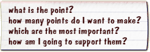
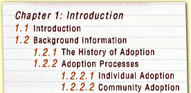
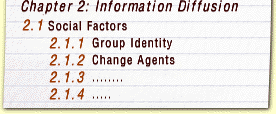

Calvary University
A virtual platform of quality
higher education, offered
within a Christian context
Academic Study Support for Higher e-Learning
Dissertation or Thesis: F.A.Q. 2 
Questions about Writing a Dissertation
For completing an M- or D-, please see: Dissertation Requirements
See also the first page for Dissertation or Thesis: FAQ
Sometimes when I'm writing I feel as though I'm saying the same thing over and over.
How can I avoid repetition?
There is overall structural repetition, repetition arising from an inability to come to the point, and repetition of words, phrases and sentences.
Structural Repetition
Structural repetition may be unavoidable: for example, you may need to repeat aspects of your methodology with each group of results. Structural repetition may even be necessary: for example, if you are applying the same analytical framework to different texts, you may need to preserve the same structure to be able to extract the common themes. However, structural repetition may not be serving any purpose and could be disguising similarities and differences in what you are discussing. This is a common problem in any comparison. You need to find the evaluative criteria which are the object of the comparison and then structure your writing around these. Use structural patterns to your advantage to emphasise your point. Often it is only by doing this and seeing what relationships different structures expose, that you fully realise the implications of your analysis. It is only through comparing and contrasting methods, models, and ways of approaching things that you can see the relative strengths and weaknesses of each; that you can see their potential applications and implications.
Not Coming to the Point
Repetition which stems from going around and around the point and never closing in on it is solved by:
stopping,
forgetting what you have written,
asking yourself

then starting afresh from the top.
Sometimes trying to re-work what you've done or adding another explanatory sentence will fail to achieve any more than yet another turn around the general area.
Talking it through with someone else or talking yourself through it will sometimes achieve clarity:
So, what I want to say here is x. I have two points to make. I will first tackle A because it will lead me to B. Once I have done this, I can go on to discuss the implications of both A and B on C. I can link this to my next point by showing that C will … etc.
Repetition of Words, Phrases and Sentences
Perhaps the repetition of whole sentences is a consequence of using a computer and the cutting and pasting function. In the most extreme cases, in some theses we read the identical sentences in the Abstract, Introduction, Discussion and Conclusion. Each section deserves to be thought through in its own terms. You may have to search deliberately for different ways of expressing yourself. The writing of the different sections may have spanned months. But the reading will be done in a short time only and the repetition begins to strike a negative note.
Phrases and words may simply be overworked as you become attached to one way of saying something. When you are coming to writing, think about different verbs and linking words and expand your repertoire and make your meaning as explicit as possible. On the other hand, a particular phrase may well be the accepted way of referring to the phenomenon in your discipline. Jargon and the particular conventions for using terms have to be retained because they are usually well-defined and enhance communication among scholars. Departure from these terms could make readers believe you are talking about something else and it could lead to misunderstanding.
There is no virtue in change for the sake of novelty. Always select the form to support your meaning. If you need a parallel structure to support a parallel meaning, then use it. For example, if you have a series of sentences in a paragraph beginning the same way, this is fine if each is an instance of the same kind of thing. To change one would break the rhythm of the paragraph and destroy the unity of the idea.
Of course, restatement of a difficult idea has a proper place in your writing. This is not the same as repetition but rather is helpful to the reader. Usually you would introduce a restatement with a marker phrase such as :
"In other words", "Put another way".
I have difficulty showing whether it's my idea or someone else's.
Do you have ways to help with this?
Some of the standard practices for referencing can indeed obscure whose idea something is. Also, some students' modesty or even their anxiety to avoid using the first person means they bury their own ideas. A clear declaration usually indicates that that the point you are making is what you, the author, believe and there is no need to preface it with "I believe that". However, sometimes a statement of opinion is ambiguous, especially if there is a reference near it to the literature.
Often, a good idea is to put the name of the author you are discussing or, in particular, evaluating in your text, not just in brackets at the end of the sentence or paragraph. You can then indicate much more clearly what that person has devised, argued, proved, criticised, postulated, or overlooked. These and other strong verbs, for a start, convey your interpretation and assessment of their work. Also, to begin a sentence with words or phrases such as "Clearly, In other words, Indeed, In contrast, Of equal importance" usually signals your voice in summing up, making a judgement, or providing an interpretation.
To illustrate this point, let's work through the following example:
However, by the mid-1970s the optimisation approach was clearly judged to suffer from a number of deficiencies (Baker, 1974; Baker and Freeland. 1975). [The credit for pointing out the deficiencies is only obliquely attributed to Baker and Baker & Freeland.] These deficiencies ranged from problems in methodology to more fundamental concerns with the overall approach. For example, the fundamental inadequacies in data representation, and the lack of explicit recognition and incorporation of experience, knowledge, and non-monetary aspects are some of the objections (Baker, 1976). [Too oblique. Try "Baker (1976) identified the deficiencies as ranging from …] In addition, the data for analysis are usually not available or may be of questionable validity (Dumbleton, 1986). [Same problem!] Furthermore, many models did not consider essential aspects related to R & D decision making. [This sentence looks as though it could be your opinion, but …?] The essential aspects include (a) adequate treatment of risk and uncertainty, (b) the continuous nature of investment in, or expenditure for the projects, ( c) the need for multiple criteria, (d) the interrelationships among projects, (e) the continuous nature of project selection, and (f) the role of experience and intuition in decision making (Lee et al., 1986). Lastly, most of the models did not allow decision makers to have a priority structure associated with the multiple objectives. [Is this your insight?]
To get away from the problems of ambiguity of attribution try rewriting:
However, by the mid-1970s, Baker (1974) and Baker and Freeland (1975) had already judged the overall optimisation approach as well as its methodology to be deficient. … Even in 1986, Dumbleton pointed out the still existing problem of the availability and questionable validity of the data. [If the following is what the writer thinks, then it could read as follows.] The critiques of the approach offered still fail to address the neglect by many models to consider essential aspects related to R&D decision making. [If, however, this was Lee et al.'s opinion, then it would need to read as follows.] Lee et al. (1986) pointed out that many models ….
An even better way might be to start from the top and introduce the paragraph by giving some overall assessment of the current state and then providing the specific points brought to light:
For a decade since the mid-1970s, researchers have been pointing to a range of deficiencies in the optimisation approach which are still not currently addressed.. Methodological problems were first highlighted by Baker (1974) ……
If you set out to analyse and assess other people's work and to put it into some framework, then it is much more likely that distinguishing between your opinion and the opinion of others will not be a problem.
Is it necessary to start with a really detailed outline for the thesis?
The answer to this depends on what you mean by a really detailed outline. If you mean that you have a well-worked out argument structure, this is wonderful. If you mean that, for a particular section, you know exactly what steps you need to take, say, for an experiment, then that's also useful. If you mean a plan of action where each part is directly aimed at achieving your objective and this relationship is evident, then this too is of great help. And, at a later stage, a comprehensive yet still flexible outline of what is going to be included in each chapter, and which comes out of the structure of your argument as a whole, is of great help in that it allows you to foreground just one section, that is a do-able bit, and write that, knowing where it fits.
However, we see some students in the earlier stages of doing a PhD who produce, often with a flourish, a very detailed outline, down to every last sub-sub-section:


Perhaps there is not much wrong with this as a Table of Contents. But as an outline of what you're going to do, it serves no purpose. Students who produce such an outline could still finish up with a brilliant thesis, especially if all the links and the reasoning are in the head. However, unfortunately, such an outline doesn't tell anyone what has led to this proposed research, why it's important and how the various parts indicated in the outline are related. It is not a document someone can work from or offer you useful feedback on. We usually find that students who produce something like this as a starting point have the concept of their thesis project as a formulaic set of necessary steps. Sometimes they have adopted an outline from a thesis done previously in their department. At this early stage students are understandably often so caught up in the content, they do not see the necessity to have an overall idea of where the study is going.
Often a very detailed outline of the table-of-contents type can delude you into thinking you have accomplished something. It can, to the contrary, actually imprison you and restrict the room for creative thinking. It blocks the necessary questioning processes: revisiting the topic, reassessing the direction your thesis is taking, and seeing how you would structure your argument.
I've got an area I'm really interested in but how can I go about actually trying to pin it down to something more specific?
Often we find students can't pin down what they really are going to do because they always think about the area of research as the content they want to research. They think about a topic, that is the subject matter of their enquiry. For example, a student would say he or she wants to do a PhD on adoption of new agricultural techniques. To pin down this topic, we have to start to think about what problems are associated with adoption of new agricultural techniques — how can they be solved? what outcomes do we want? From whose perspective are we dealing with this topic? We have to search for what problems lie within the topic.
So, a good idea would be to write down the broad topic of what it is you want to investigate. Use this as a stimulus to begin a recursive process of questioning, expanding, exploring, excluding then back to questioning to get at the problems, investigate all possible angles and their probable feasibility. You have to start seeing relationships between sub-areas of the topic. It is by investigating relationships between things that you find solutions. This gets you away from describing content which can keep the thinking either at a very global or a very detailed, specific level without ever formulating problems for investigation, or thinking how the known information can be used to solve new problems, or indeed to see what new information or methods are needed to solve the problem.
Certainly, at the level of being interested in a broad area, the literature will pull you in many directions. In a sense, the need is to read in order to discard. But the decision to discard rests with the answers to the questions generated.
It is necessary to ask questions continually around the general area and then again at each stage as what you are pursuing becomes more specific. Questions, for example, include the basic types, plus more specific probing. For example:
- why is it interesting or important?
- what are the elements/factors/issues involved?
- what do you think are the contributory causes?
- what do you think it would solve?
- what is its purpose?
- can it be formalised?
- what has been done in the past?
- what does the history of this show?
- how is it known?
- what other examples are there of this kind of thing happening?
- is it something new, or has it evolved from something else?
It is very important at this stage to discuss your ideas with as many people as possible, and certainly with your supervisor. Discussion with others provides a mechanism for pinning down what it is you want as others will question you, add their ideas, and so on. The supervisor will know the field so he or she could help to sift ideas, know if there is anything new in your topic, and have some preliminary ideas about the feasibility of the more specific options your exploration will get you to.
How do I handle disagreements with my supervisor?
Disagreements are almost bound to happen in a relationship that lasts for three or more years. These disagreements arise in any area and differ in their degree of severity. What may seem to be the end of the universe to you may be perceived as only a minor hitch to your supervisor. Conversely, you may be going along happily while your supervisor seethes. More likely, however, you are both aware of a problem. Regardless of the situation it is always disruptive and can slow, or even halt, your progress. Whatever the problem, if you are sure that you haven't misinterpreted the situation, the first thing is to do something about it.
Here is a common situation and a possible way you could handle this and similar disagreements.
The supervisor says that you don't have enough and you need to do a few more experiments. You don't agree because you feel that you definitely have enough and you're aware of time passing.
You don't agree because you feel that you definitely have enough and you're aware of time passing.You have two options. You can decide to handle the disagreement on the spot or you could give yourself time to think about it.
Time to think and react.
You tell your supervisor that you need to think about it. This gives you time to think about what the supervisor said, to overcome your emotional response, and to prepare a comprehensive answer. It could even be helpful to write down your thoughts. There could be several possible outcomes of your next meeting with your supervisor:
- after a thorough discussion, your supervisor accepts your point of view.
- or you reach a compromise. You agree to do some but not all of what was originally asked of you to ensure your thesis reaches the required standards.
- or you reach total deadlock. From here you may decide that, even though you disagree, you will do what is asked because it is a trade off to preserve your relationship and to finish without too many hassles. Or you decide your reasons are strong enough and you don't want to give in. If further discussion doesn't resolve the situation it may be helpful to talk to someone else such as a fellow researcher, learning adviser, student union representative for postgraduates, or counsellor.
If, as a result of all this discussion, you modify your position you should feel comfortable to return to your supervisor and talk it over again. It could be that your supervisor has been rethinking too. A new solution is found. On the other hand the deadlock persists and maybe now is the time to talk to the head of the department and even consider changing supervisors. It has to be remembered that this is a last resort and must be carefully considered.
Certainly disagreements can be uncomfortable. However it is very often the case that disagreements force a rethinking. This can improve the thesis — and indeed the relationship with the supervisor. It is important to remember at all stages of any disagreement with your supervisor to try to keep communication going.
Every university has an established procedure for dealing with grievances and problems that may occur during your candidature. Consult official university handbooks, postgraduate organisations, postgraduate student organiser, faculty committees on postgraduate students and student advisers if necessary.
Why am I doing this and how do I keep myself motivated for two years?
Why you are doing a PhD is a question you must make yourself answer honestly, not only when you start, but throughout the degree. Sometimes your long term goals get lost in the day to day activities but sometimes they were never clear in the first place. Also, circumstances can change.
No one, of course, can answer this question for you. However research into completion rates of PhDs shows that those who really want the degree are the most likely to finish. Therefore it would be ideal to have more than one reason to keep you going — you love research and study, you want to have the time and space to explore a topic that has always interested you, you think it's necessary for your career, you see it as a worthwhile challenge.
These reasons start you off. To keep going for two years we see that there are a number of keys to motivation:
- having good reasons for doing it and consciously reminding yourself of them;
- having a topic which 'grabs' you and which works;
- having a rich network of contacts: your supervisor, fellow students, other academics, and of course family and friends;
- having the attitude that you are part of the academic scene, that you belong;
- being organised and feeling in control.
Everyone recognises also that having something successfully completed — be it a seminar paper, section of the thesis, or published article is a great boost and motivator. Therefore, giving yourself do-able, interim goals is a wise strategy.
How is the best way to organise myself to get the whole thing done?
Certainly at the beginning of your enrolment, three and a half years seems like a long time. Likewise, if you are doing a PhD part-time, initially there seems to be plenty of time. However, this time stretches ahead with no externally set interim deadlines. It is up to you to give it a structure.
Time
It's not easy for you to talk about getting the thesis done if you isolate it from its context. It has to be considered in relation to your whole life and you need to assess realistically how much time you can devote to your PhD work. Most PhD students have many other commitments, including family, friends and full or part time jobs. If you are a full time student, you need to commit yourself to your PhD study as you would to a full time job. If you are a part time student, you have to plan to find the necessary time and be realistic about the time you actually have.
Understand the work entailed in a PhD
Then, to organise how you are going to do your work, you need to know what the work is. First, therefore, you need to have a holistic view of your thesis and know where it is going. Here we assume that you have done the whole intellectual conceptualisation of it and the basic designing of your work. If not, then this is your first task and it's a good idea to give yourself a time limit for it. Once the overall concept is pinned down, this may identify the tasks ahead in fairly specific terms, which is often the case in the sciences. In the humanities, however, this can be more elusive and, indeed, settling on the method of analysis could well be the whole focus of your research. Nevertheless, you do need to identify in broad terms what specific tasks need to be done to get you to where you want to be at the end. Not only do you need to know the sequence of the tasks, you need to know when you are going to do them and how long they are likely to take.
Reaching certain objectives at the end of specified periods
Now that you know where you are going and the broad tasks involved, you need to plan where you will be ideally by the end of each year. Once you have this overall structure, then there is a need to break down the tasks and the time further. For some people, having a vision of what will happen over the next month is enough; others need to plan on a weekly or even daily basis. You have to see what works for you and don't just adopt a plan that works for someone else. For example, if a colleague works every Monday on the Literature Review and analyses data the rest of the time, that might work for that person but be a strange thing for you to do.
Not only does your plan have to work for you and not be someone else's but, even when you have settled on your plan, you need to be flexible enough to change it if it's not working. Don't become a victim of your own plan. Remember, a plan is just another of the tools to help you reach your goal. Some people think they don't need a plan and others spend all of their time planning. Avoid both of these pathologies and find a level and type of planning which suits you and works.
Planning
There are two basic types of plan: one focuses on time and one focuses on things to be done. For example, some people focus on time slots and then allot tasks to available time slots, whereas others operate from 'to do' lists put in order of priority and do the tasks as time becomes available. Within either approach, whatever you plan to do has to be quite specific. For example, 'working on literature review' is too general; rather, have the tasks within this specified: 'compare White's and Brown's views on x' or 'find out what followed from Black's proposed framework for y'. Regardless of style of plan, it still is a good idea to set time limits for tasks as they can stretch and lead you in various interesting but irrelevant directions. It is necessary to review how you are going, to see if you are still 'on task', and, rather than drifting aimlessly, to make a conscious decision about whether what you're doing deserves more attention. At times, it may be beneficial to allow yourself a finite period to browse and just take what happens. If this is part of the plan, then there's no guilt!
To avoid burnout, you need to build into your plan rest, recreation, fun, spare time and even 'catch up' time. As with most things, planning involves trial and error. You are unlikely to get it right the first time. You need to think about what worked and what didn't work for you, modify your plan, trial it again, and continue the process. And, of course, circumstances change through transition to another stage of your work or because of events in your life. Your plan will have to change too.
Why do I have to have a literature review?
This is an important question to ask yourself. As well as helping you to write a good literature review, fully understanding the need for such work is what allows you to know you're on-track, why what you're doing is worthwhile, and that you do have a contribution to make. In other words, the literature review is integral to the whole thesis; it is not just a routine step taken to fulfil formal requirements.
You need a good literature review because it:
- demonstrates that you know the field. This means more than reporting what you've read and understood. Instead, you need to read it critically and to write in such a way that shows you have a feel for the area; you know what the most important issues are and their relevance to your work, you know the controversies, you know what's neglected, you have the anticipation of where it's being taken. All this would allow you to map the field and position your research within the context.
- justifies the reason for your research. This is closely connected with demonstrating that you know the field. It is the knowledge of your field which allows you to identify the gap which your research could fill. However, it is not enough to find a gap. You have also to be able to convince your reader that what you are doing is important and needs to be done.
- allows you to establish your theoretical framework and methodological focus. Even if you are proposing a new theory or a new method, you are doing so in relation to what has been done.
The literature review becomes your springboard for the whole thesis.
What style of writing is expected?
It is a purposeful kind of writing which is to be
- well argued;
- well supported by evidence;
- well documented.
A straightforward style — neither informal and chatty, nor stuffy and pompous — is what to aim for. Use clear and unadorned English appropriate for your audience. Therefore, use the jargon of your discipline when it serves your purpose. Don't, however, build a smokescreen of impressive sounding phrases to mask what it is you are saying.
You know from your own experience that very complex ideas in your own field can be and are expressed very clearly by good scholars in your discipline. While you are reading for your research, take note of particularly well written articles. But also be aware of the kind of writing which frustrates you as a reader and obscures the point.
You need to be aware of who it is you are writing for. You are not writing for your supervisor, who knows precisely what you are doing, but for someone who may need to be reminded of some background and who, at the very least, needs you to signpost the importance of the various parts.
You also need to think about what it is you are actually doing; are you describing something, analysing something, explaining something, arguing the point, giving examples, evaluating or assessing the value of other arguments or the sufficiency of evidence? What you are doing affects the language you use. In particular, the verbs you use need attention because they convey your attitude. In our experience, very often students don't exploit verbs fully, relying on just one or two favourites (for example 'mentions', 'states', 'suggests', 'discusses') or overworking the weaker verbs ('have', 'be'). However, verbs such as 'judges', 'postulates', 'excludes', 'convinces', 'confuses', 'questions', 'advances (the argument)', 'verifies', provide a stronger interpretation of your reading, understanding, and opinion of the research.
Apart from questions of who your reader is and what it is you are doing, matters of style need to be considered. We have taken the three we find most commonly asked about:
Use of the personal pronoun.
For some disciplines, the demands of objectivity mean that the use of 'I' is frowned upon. Of course not using 'I' does not ensure the objectivity of the work; nor does its use shatter objectivity. Acceptance of the use of the personal pronoun has become more common in some disciplines. Even if 'I' is acceptable, however, its use has to be controlled as you yourself are not the subject of the thesis. Therefore, regardless of the practice, there will necessarily be large parts of the thesis in which the problem never arises. We would advise to check with your department or supervisor and take your cue from publications and theses in your academic area. If you do decide to avoid the use of 'I' at all, don't substitute 'we' and don't move into pompous circumlocutions such as 'the author'. Whatever your decision about this issue, be consistent in your usage.
Active vs passive voice.
Both active and passive voice should be used — where appropriate. (Or…You should use, where appropriate, both active and passive voice!) As a general rule, use active voice unless there is good reason not to. For example, if "The results support the theory" is the active, and the passive is "The theory is supported by the results", then we would select one or the other version depending on whether we were stressing the results or the theory, or if we wanted to manipulate the sentence for it to finish with one or the other in order to link it to what followed. Otherwise, choose the active as more direct. This is a very simple example, of course, and the distancing effect of the passive here is not great. However, in more complex examples, and also where a series of passives piles up the reader fights unnecessary obstacles.
The use of tenses.
Many students have come to us clinging to an absolute dictum about what tense to use. Their beliefs seem to divide equally between total dedication to the use of the present and total dedication to the use of the past. In truth, it is the rules which cause the problem. The tense that suits your purpose is the tense you use. Clearly, an event, be it a survey, an experiment, a study of some kind, done by other researchers or by you, has to be in the past and it is usual to use the past tense to describe it. However, the interpretations, evaluations, assessments, discussions, or ideas arising from this mostly still hold and it is usual to talk about them in the present. Even though someone has written an article a decade ago, the article still exists, is currently part of the living knowledge of your discipline, and your reaction to it is happening now. There is even the possibility that you could be predicting something for the future, so the manipulation of time changes again to fit the situation. For example,
Smith (1965) reports a study conducted on bees which used White's (1953) radical artificial insemination technique. These data are still the most convincing to support Brown's (1996) hypothesis that bees would respond well to intensive bee husbandry.
In other words, the goal is to achieve a clear, logical style. Clear writing, however, is usually the result of lots of rewriting and careful attention to what it is you really want to say. Clear writing is not the result of obedience to prescriptive rules. Seldom does clear writing come about in the first or even the second draft. It takes work to remove clutter and to fill missing links but the results make the work worthwhile.
Do I have to act on every bit of feedback I get?
Feedback comes from many sources and its greatest value is that it offers a different perspective from our own. However although we must consider all feedback, this does not mean that we have to suspend our own judgement and blindly follow it. Therefore, when you are confronted with feedback it may be helpful to ask yourself:
- am I sure I understand what the reader is getting at?
- do I think my reader has understood the points I was making?
- do I agree with the feedback? to what extent do I want to follow it?
- why did I do it the way I did it in the first place?
- is it consistent?
Asking yourself these and similar questions allows you to respond to the feedback in a calm and reasoned, rather than emotional, way. You are now in a position to make decisions about how to respond. You might seek and offer clarification on some points. You might decide to make some changes — because of the thinking sparked off by the feedback, or because the reasons given are reasonable. On the other hand, you might consider it and then decide to ignore it. Or if it is important enough, you might wish to discuss it further and justify your stance.
Show the other page for Dissertation or Thesis: FAQ
Copyright © Calvary University, 1998 All rights reserved.
Virtual Learning Centre for Accredited Christian Higher Education